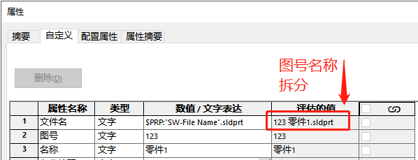
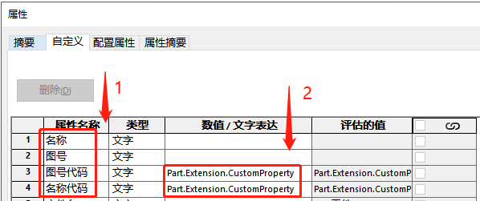
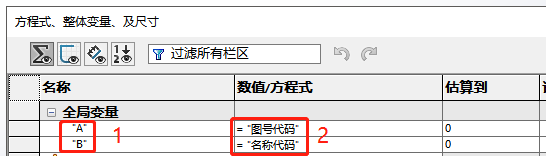
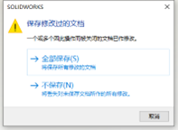
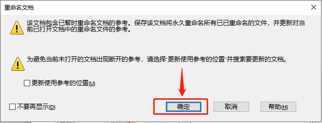

Sw 图号名称分离工具（V1.0）
我们设计文件通常会以”12345+零部件名称”的图号+名称的形式，并且我们希望此文件名的图号和名称能以单独的属性填入，如图
利用方程式实现图号名称自动分离，需要用到方程式作为属性代码的变量，属性项里填入操作的代码。实现对文件名分离。步骤如下：
1填入代码属性
点击文件-属性，在属性栏增加这 4 项
在图号代码和名称代码数值里填入如下内容，需区分零件和装配体的格式。
1-1 零件
零件图号代码：
1 | Part.Extension.CustomPropertyManager("").Set("图号",Left(Part.GetTitle,InStr(Part.GetTitle," "))) |
零件名称代码：
1 | Part.Extension.CustomPropertyManager("").Set(“名称”,Trim(Replace(Right(Part.GetTitle,Len(Part.GetTitle)-InStr(Part.GetTitle," ")),".SLDPRT"," "))) |
1-2 装配体代码
装配体图号代码：
1 | Assembly.Extension.CustomPropertyManager("").Set("图号",Left(Assembly.GetTitle,InStr(Assembly.GetTitle," "))) |
装配体名称代码：
1 | Assembly.Extension.CustomPropertyManager("").Set("名称",Trim(Replace(Right(Assembly.GetTitle,Len(Assembly.GetTitle)-InStr(Assembly.GetTitle," ")),".SLDASM",""))) |
2填入方程式变量
点击【工具-方程式】，按照图片内容增加 2 条方程式（引号为英文状态双引号）
问题点：
Q3：对于已经画好的半成品或是外来图，加上利用方程式代号名称分离比较繁琐
A3：可以考虑用方程式宏进行修改
Q4：每次打开，不管你改没改文件，都会弹出保存对话框，打印图纸也提示保存。并且在外面修改的名称需要打开文件保存属性修改才能生效
针对 Q4 问题做了如下测试：
在 SW 改名不打开 SW 文件，属性无更新，需打开文件保存生效；
在 SW 软件内改名，属性更新，保存生效；
装配体打包零件改名，属性无更新，打开装配体（保存所有）或零件保存后生效；
期间出现”参考文件提示”选择确定
属性代码：
零件
图号
1 | Part.Extension.CustomPropertyManager("").Set("图号",Rtrim(Left(Part.GetTitle,InStr(Part.GetTitle," ")))) |
名称
1 | Part.Extension.CustomPropertyManager("").Set("名称",Trim(Replace(Right(Part.GetTitle,Len(Part.GetTitle)-InStr(Part.GetTitle," ")),".SLDPRT"," "))) |
装配体
图号
1 | Assembly.Extension.CustomPropertyManager("").Set("图号",Left(Assembly.GetTitle,InStr(Assembly.GetTitle," "))) |
名称
1 | Assembly.Extension.CustomPropertyManager("").Set("名称",Trim(Replace(Right(Assembly.GetTitle,Len(Assembly.GetTitle)-InStr(Assembly.GetTitle," ")),".SLDASM",""))) |
配置特定
以上是识别到自定义属性的代码。若需要按当前配置录入到配置特定的属性。则有如下区别
1 | 将自定义属性的变量“” |
其他
这里也发现通过其他代码实现的例子，记录下。但这个代码有个问题：文件扩展名需要显示出来，否则名称会分离错误
1 | Assembly.Extension.CustomPropertyManager("").Set("名称", Left( Right(Assembly.GetTitle,Len(Assembly.GetTitle)-InStr(Assembly.GetTitle," ") ) ,Len( Right(Assembly.GetTitle,Len(Assembly.GetTitle)-InStr(Assembly.GetTitle," ") ) ) -7 ) ) |